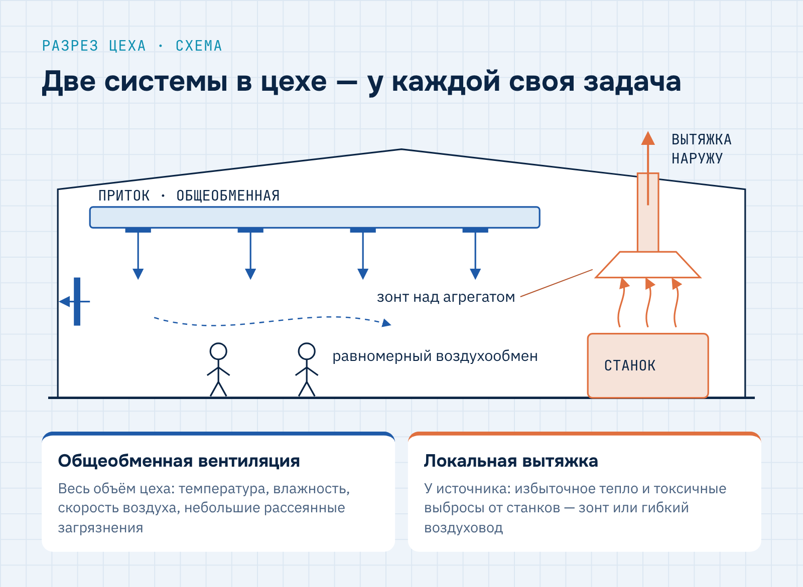
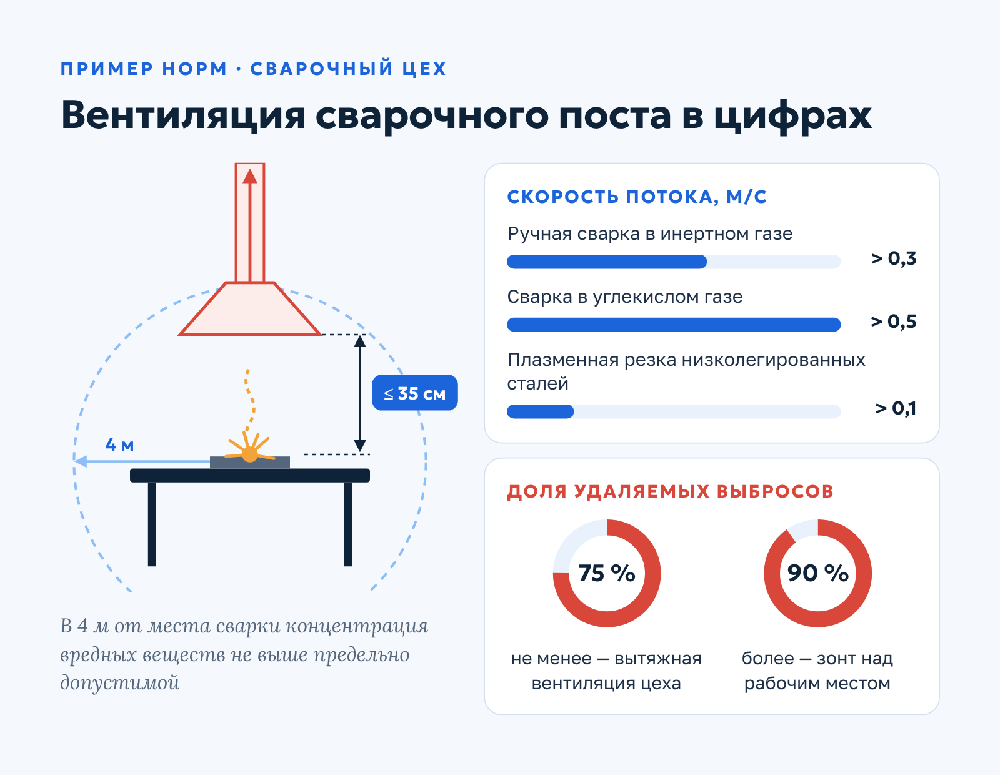
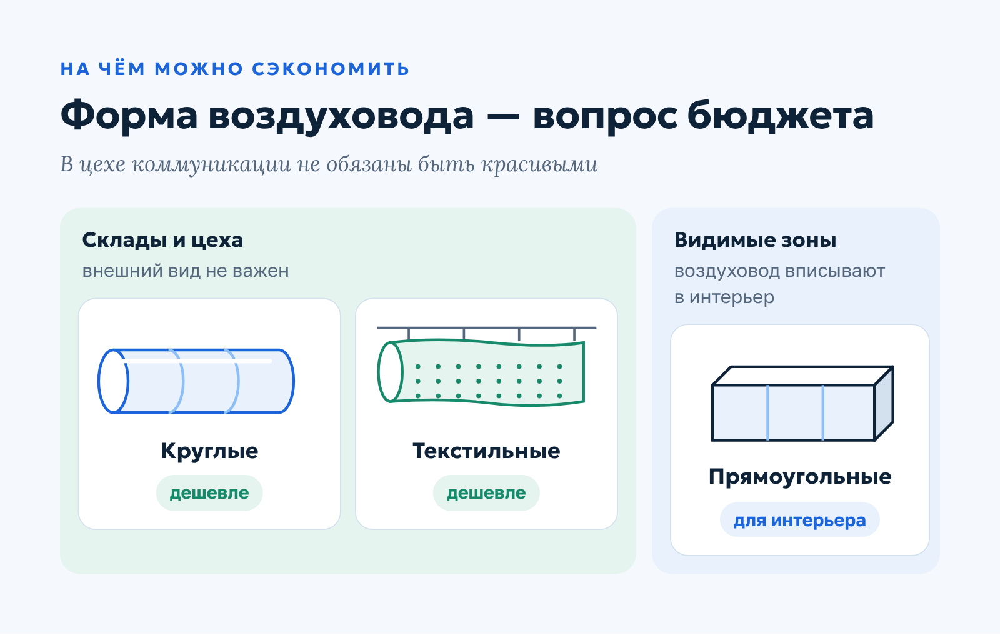
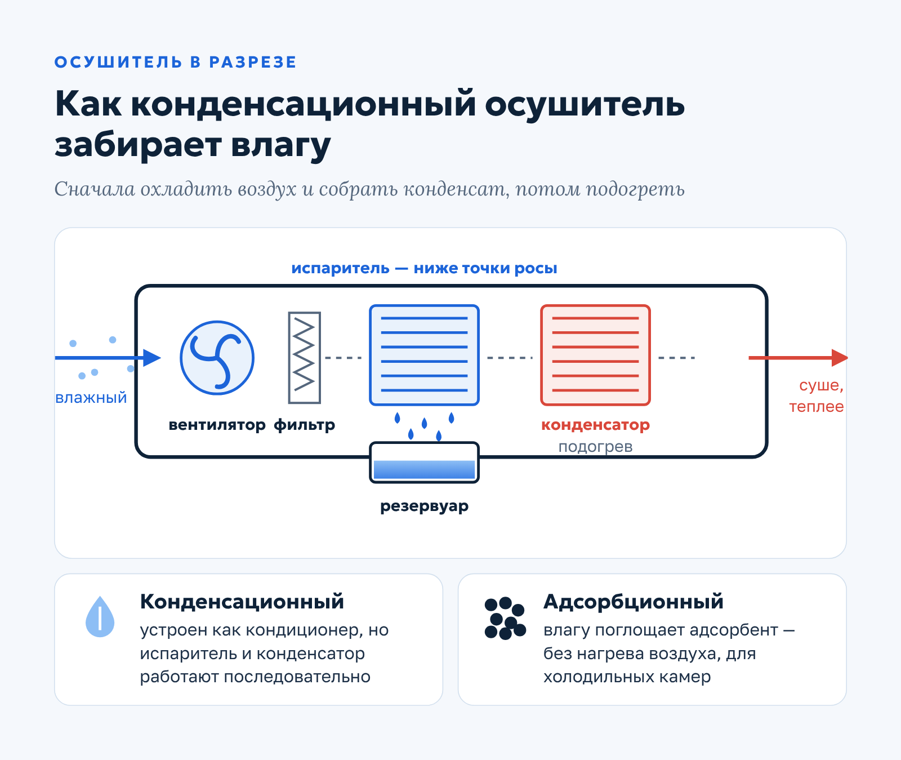
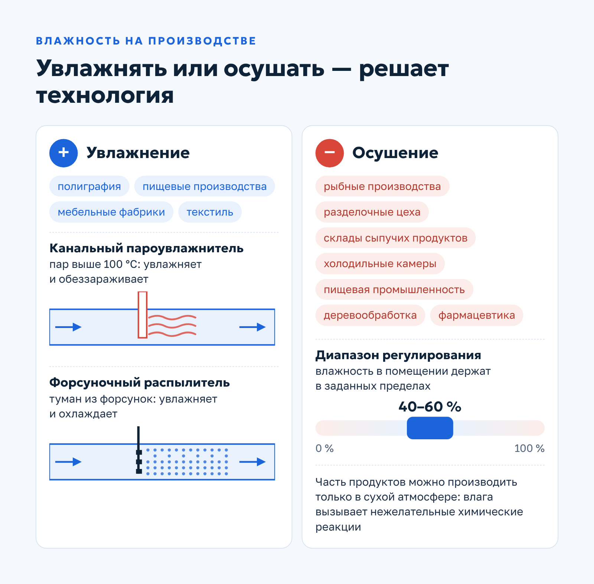

Qwent · Экспертная статья · B2B
Экспертная статья для инженерной компании: вентиляция на промышленных объектах
О заказчикеQwent — инженерная компания из Москвы (сайт ceds.ru): монтаж и обслуживание систем вентиляции и кондиционирования.
Задача
Написать экспертную статью для блога инженерной компании о вентиляции на промышленных объектах: объяснить владельцам производств, какие системы бывают, какие нормы действуют и почему без проекта и технологического решения монтаж рискован.
Решение
Выстроила статью от выбора типа системы (общеобменная и локальная) к нормам на примере сварочного цеха, сравнению моноблочных и наборных установок, фильтрации, увлажнению и осушению. Использовала конкретные нормативные цифры (расстояние до раструба, скорости потока, доли удаляемых выбросов, классы фильтров), отраслевые примеры и определение технологического решения; в финале — переход к материалу о выборе подрядчика.
Результат
Справочная статья для руководителей производств: читатель понимает, какую систему заказывать, на чем можно разумно сэкономить и почему начинать нужно с технологического решения и проекта.
Ключевые особенности установки систем вентиляции на промышленных объектах
Вентиляция на производстве решает сразу две задачи: защищает здоровье сотрудников и поддерживает условия, которых требует технологический процесс. Производство часто сопровождается выбросом вредных веществ, избыточным теплом, повышенной или, наоборот, слишком низкой влажностью.
Задача владельца бизнеса — организовать воздухообмен, который отвечает санитарным требованиям и строительным нормам. Как все учесть и не допустить ошибок, которые потом придется дорого исправлять, — разбираем в статье.
Какие системы используются на производстве
Эффективно организовать воздухообмен на промышленном объекте может только механическая вентиляция. От естественной она отличается принудительной движущей силой — вентилятором — и возможностью предварительно очищать, увлажнять и нагревать воздух.
На промышленных объектах востребованы два вида систем.
Общеобменная вентиляция
Работает в масштабе всего помещения и создает равномерный воздухообмен. Поддерживает ключевые показатели микроклимата — температуру, влажность, скорость движения воздуха. Подходит для создания комфортных условий и эффективно удаляет небольшие загрязнения, распределенные по всему объему цеха.
Локальная вытяжка
Без нее не обойтись, если станки и другое промышленное оборудование выделяют много тепла и сильно загрязняют воздух. Вредные выбросы нужно удалить прямо у источника, пока они не разошлись по цеху. Локальную вытяжку монтируют в виде вытяжного зонта над агрегатом или подключают к выхлопному отверстию гибким воздуховодом.

На большинстве промышленных объектов обе системы работают одновременно: локальная вытяжка перехватывает основные выбросы у оборудования, а общеобменная вентиляция поддерживает микроклимат и удаляет то, что успело попасть в воздух помещения.
Нормативные требования
При проектировании и монтаже вентиляции на промышленных объектах руководствуются строительными нормами. Основной документ — СП 60.13330.2020 «Отопление, вентиляция и кондиционирование воздуха», актуализированная редакция СНиП 41-01-2003. В нем изложены основные требования и расчетные параметры, по которым должна быть организована работа системы вентиляции.
Если требования соблюдены, система обеспечивает нужный температурный режим и влажность, своевременно удаляет избытки тепла и влаги, испарения, газы, пыль и другие загрязнители.
Пример: вентиляция сварочного цеха
Сварочное производство — один из самых наглядных примеров того, насколько строгими бывают требования к вентиляции:
- расстояние от рабочего инструмента сварщика до вытяжного раструба не должно превышать 35 см — обеспечить это может только локальная вентсистема;
- скорость потока воздуха должна быть выше 0,3 м/с при ручной сварке в инертном газе, 0,5 м/с — в углекислом газе и 0,1 м/с — при плазменной резке низколегированных сталей;
- вытяжная вентиляция должна удалять из цеха не менее 75 % токсичных выбросов, а вытяжной зонт непосредственно над рабочим местом сварщика — более 90 % вредных веществ.
Нормы касаются и воздуха за пределами рабочей зоны: на расстоянии 4 м от места сварки концентрация вредных веществ не должна превышать предельно допустимую.

Соблюсти все эти условия одновременно можно только на основе расчета: инженер подбирает тип и расположение вытяжных устройств, производительность вентиляторов и баланс притока и вытяжки для конкретного цеха.
Моноблочные или наборные установки
На промышленных объектах чаще всего применяют моноблочные вентиляционные установки. Менее популярная альтернатива — наборные: их собирают из отдельных компонентов, они требуют тщательного проектирования и более дорогого обслуживания.
Сравним оба варианта по ключевым для производства параметрам:
| Параметр | Моноблочная установка | Наборная установка |
|---|---|---|
| Поставка | Ключевые компоненты собраны в шумоизолированном корпусе | Собирается на объекте из отдельных компонентов |
| Надежность | Производитель отвечает за работу системы в целом, риск простоя ниже | Отказ одного компонента может остановить производство |
| Габариты | Компактная, занимает мало места | Обычно крупнее |
| Монтаж | Быстрее, требует меньше расходных материалов | Дольше и сложнее |
| Обслуживание | Проще | Сложнее и дороже |
Моноблочная установка закрывает две задачи, критичные для любого производства: комфортный микроклимат в цехе и непрерывный производственный цикл.
На чем можно сэкономить
Вентсистемы для промышленных объектов стоят дорого, поэтому вопрос разумной экономии актуален всегда. Одна из статей расходов, которую можно пересмотреть, — воздуховоды.

В складах и цехах внешний вид коммуникаций обычно не важен. Здесь можно смело использовать круглые или текстильные воздуховоды: они хорошо справляются со своей задачей и стоят дешевле прямоугольных. Прямоугольные востребованы там, где воздуховоды должны вписаться в интерьер.
Экономить стоит на внешнем виде, а не на расчете. Форма воздуховода в цехе — вопрос бюджета, а производительность и состав системы — вопрос безопасности и соответствия нормам.
Фильтрация
Если при производстве образуются вредные испарения, вытяжные воздуховоды оснащают системой фильтрации. Эти требования также изложены в СП 60.13330.2020: они защищают окружающую среду от токсичных выбросов.
Пример — снова сварочное производство. При работе выделяются продукты горения, газообразные фтористые соединения, мелкодисперсная пыль металла и флюса. Для очистки воздуха от сварочных аэрозолей нужны фильтры тонкой очистки класса F9 и выше по ГОСТ Р 51251-99, а для удаления вредных газов — адсорбционные (угольные) фильтры.
Аэрозоли и газы улавливают разными способами, поэтому в проекте вытяжной системы очистку от каждого вида загрязнений предусматривают отдельно. Класс фильтров подбирают по составу выбросов конкретного производства.
Увлажнение
Для ряда предприятий важно поддерживать повышенную влажность воздуха. Это полиграфические комбинаты, пищевые производства, мебельные и текстильные фабрики. На таких объектах применяют два вида увлажнителей:
- Канальные пароувлажнители — монтируются в вентиляционный канал и впрыскивают в воздушный поток водяной пар с температурой выше 100 °C. Одновременно увлажняют и обеззараживают воздух.
- Форсуночные распылители — работают по адиабатическому принципу. Насос подает воду под давлением на форсунки с микроотверстиями, и она превращается в мелкодисперсный туман. Взвесь подается в вентканал, быстро увлажняет и дополнительно охлаждает воздух.
Промышленные увлажнители не только делают микроклимат комфортнее для сотрудников, но и помогают соблюдать требования технологического процесса.
Осушение
В ряде отраслей нужен обратный процесс — осушение. Промышленные осушители устанавливают на рыбных производствах, в разделочных цехах и складах сыпучих продуктов, в холодильных камерах, на предприятиях пищевой промышленности, в деревообработке и фармацевтике. Оборудование снижает влажность и удерживает ее в допустимых пределах.
Конденсационные и адсорбционные осушители
По принципу действия различают осушители двух типов.
Конденсационный осушитель вентилятором забирает влажный воздух из помещения и пропускает его через фильтр, который задерживает пыль. Затем воздух проходит через холодный испаритель: он охлаждается ниже точки росы, и содержащаяся в нем влага конденсируется на пластинах и стекает в резервуар. После этого конденсатор нагревает осушенный воздух, и он возвращается в помещение.

Адсорбционный осушитель работает за счет адсорбента — вещества, которое поглощает влагу из воздуха. Такая установка подходит для объектов с низкой температурой, например холодильных камер: она поддерживает низкую влажность без нагрева воздуха в помещении.
Конденсационный осушитель устроен как кондиционер, но испаритель и конденсатор в нем работают последовательно: сначала воздух охлаждается и отдает влагу, затем нагревается. Поэтому на выходе он суше и немного теплее, чем на входе.
Зачем производству сухой воздух
Осушители поддерживают нужные параметры воздуха и в помещениях, где работают люди, и там, где идут технологические процессы. С их помощью влажность можно регулировать в пределах от 40 до 60 %.
Многим производствам нужен воздух с влажностью намного ниже, чем у наружного. Сухой воздух используют, чтобы удалить воду из промышленных изделий. Некоторые продукты можно производить только в атмосфере с низкой влажностью: влага способна вызвать нежелательные химические реакции.

При выборе осушителя учитывают рабочий диапазон температур, категорию помещения и необходимые функции — например, способность создавать направленный поток осушенного воздуха.
Технологическое решение: почему без него нельзя
Главное условие эффективной работы вентиляции на промышленном объекте — технологическое решение, на основе которого составляют техническое задание.
Технологические решения — комплекс мероприятий, который согласует архитектурные, объемно-планировочные, конструктивные и инженерные проектные решения с назначением здания и технологическими процессами, которые в нем идут.
Заказывать монтаж вентсистемы без проектной документации рискованно. После установки может выясниться, что система не отвечает требованиям, не справляется с воздухообменом или неэффективно снижает концентрацию вредных веществ. Такие ошибки нарушают требования охраны труда, влияют на технологический процесс и требуют дорогостоящих доработок.
Если вы только выбираете исполнителя, пригодится наш материал о том, как правильно выбрать компанию для монтажа инженерных систем: в нем мы разобрали, на что смотреть при выборе подрядчика.
Заключение
Вентиляция на промышленном объекте — одна из важнейших инженерных систем. Она создает комфортный микроклимат для персонала, позволяет соблюдать требования технологического процесса и быстро удаляет вредные выбросы.
Такая система требует проектирования на основе технологического решения, профессионального монтажа и регулярного обслуживания. Только при этих условиях она полностью соответствует нормам и служит долго.